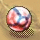
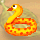
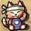
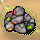
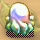
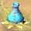
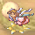
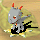
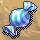
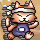 帶在手上練工作技能，可以快速完成工作。譬如桃子要兩次工作次數，帶上手套只要一次，但是經驗值並沒有加倍，做幾次就是得到幾次的工作經驗 | 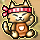 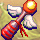 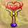 使用時效一小時，時效內玩家所得的經驗值都會分享給參戰的寵物，而玩家則不會得到任何經驗值。戰鬥結束時若玩家沒有帶任何寵物，也依然得不到經驗值 | 使用時效一小時，時效內玩家所得的經驗值如同玩家不帶寵物時一樣，而參戰的寵物則沒有任何經驗值 | 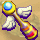 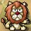 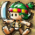 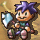 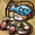 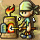 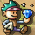 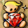 |